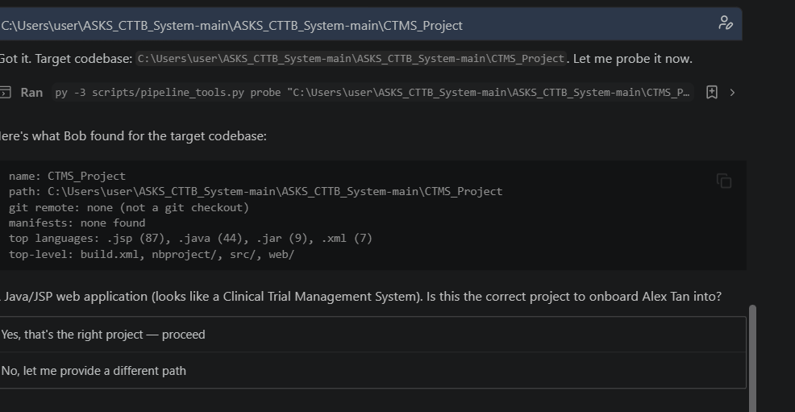
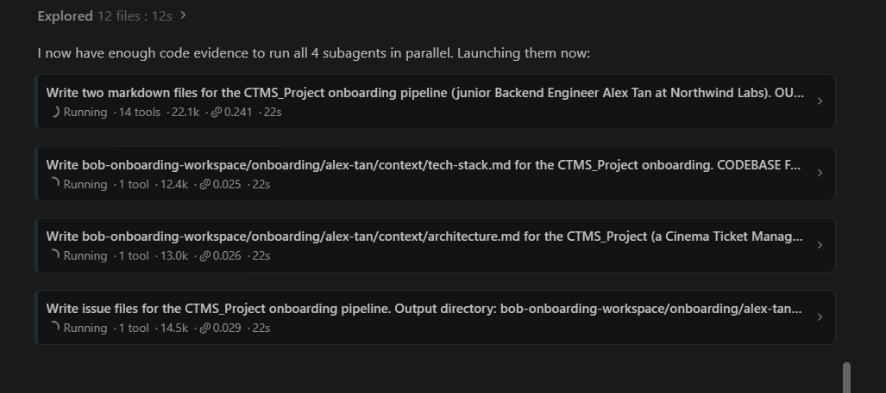
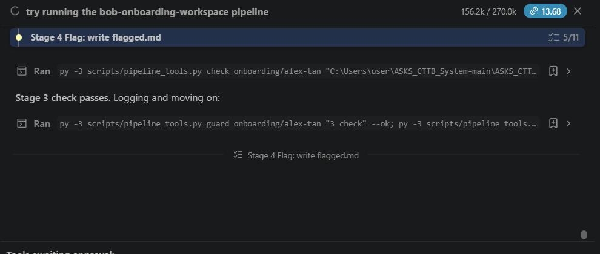
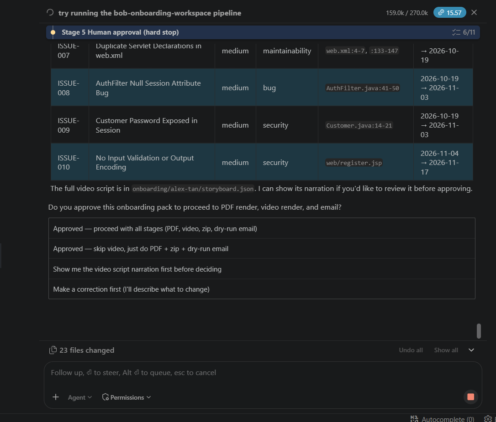
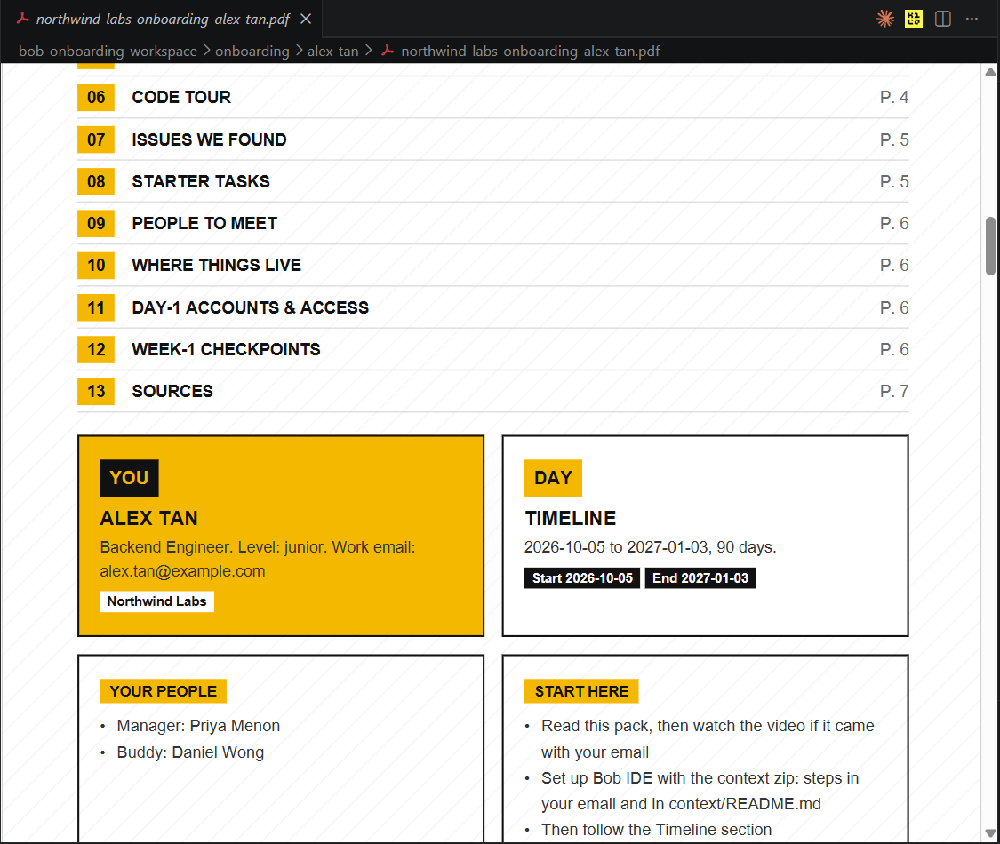
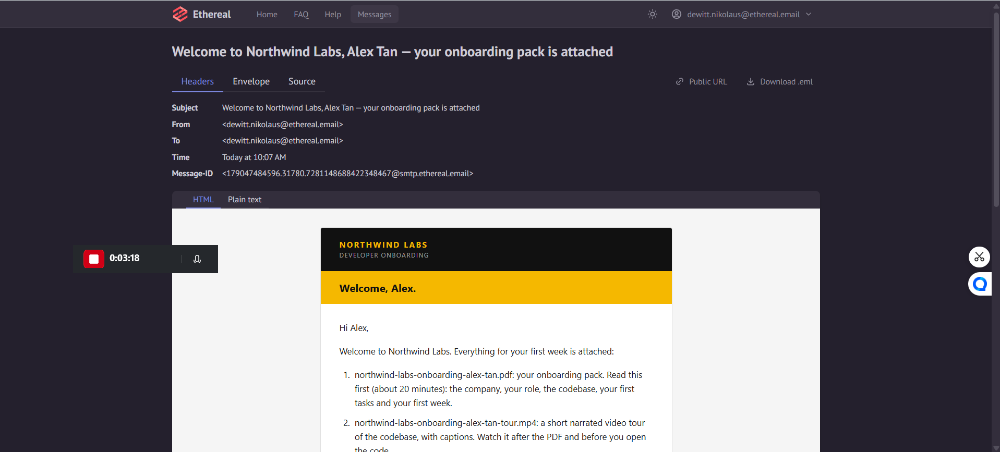

-
The problem
Onboarding lives in seniors' heads.
Developers spend ~58% of their time just understanding code. New hires get a stale README, and seniors lose hours answering the same questions for every new person.
-
What we built
One
/onboardcommand in IBM Bob IDE.The manager answers a few questions. Bob scans the repo with four parallel subagents, checks every claim against the code, waits for the manager's approval, then renders and emails the pack.
-
The result
A full pack in ~21 minutes, ~3 minutes of senior time.
In our demo run: a 7-page PDF, a 97-second code tour, and 10 real issues found — against an estimated 4–8 hours to write the same pack by hand.
The pipeline at a glance.
What goes in, what Bob does inside the IDE, and what comes out.
/onboard command
- 1IntakeBob asks the manager a few questions and confirms the repo.
- 2Generate4 subagents in parallel:
- Company & role
- Architecture & code tour
- Issue scan
- Tech stack
- 3MergeOne pack for the hire, a brief for the manager, a dated timeline, a video script.
- 4CheckPlain Python confirms every cited file and line exists.↺ fix loop, max 3 tries
- 5FlagAnything unconfirmed becomes "Unknown — ask your buddy".
- 6Manager approvesHard stop. Nothing is rendered or sent without a yes.
- 7RenderBranded PDF and a narrated video tour.
- 8Package & sendContext zip, setup guide, and two emails via Bob's MCP email server.
- A personalised onboarding PDF
- A narrated video tour of the code
- One file per known issue, with file and line
- A context pack that gives their own Bob this company, role and codebase
- Replies to the email go straight to their buddy
- A day-1 brief: what to say, who to introduce, check-in dates
- An access checklist to set up before day one
- The gaps Bob couldn't confirm, to fix before the hire starts
Where IBM Bob does the work: the whole pipeline is a packaged Bob skill run in Agent mode. Bob asks the intake questions, runs the four subagents in parallel, repairs failed checks in a bounded fix loop, and sends the emails through an MCP server that Bob itself built and tested for this project.
Onboarding runs on a stale README and a senior's memory.
Every new hire gets a different ramp-up, and the team pays twice: the newcomer's time spent figuring the code out, and the senior's time spent re-explaining it. This isn't an anecdote — independent studies keep landing on the same pattern.
of a developer's time goes to understanding code, not writing it — juniors spend the most.
Xia et al., IEEE TSE 2018 · 79 devs, 3,244 hoursof managers spend 30+ minutes a day answering questions — the same share of developers spend 30+ minutes searching.
Stack Overflow Developer Survey 2024 · ~65k devsemployee turnover in Malaysia — the highest in Southeast Asia — so onboarding happens again and again.
Aon SEA Turnover Study 2026 · 1,200+ businessesPut together: understanding code is the dominant activity, the knowledge that would speed it up is tacit and undocumented, and when it's missing the cost doesn't disappear — it moves onto a senior's calendar as interruptions. This pipeline writes that knowledge down once per hire, with citations back to real files and lines.
See the research behind this (5 independent sources, then SEA → Malaysia)
Four different methods — a time-diary field study, a 65,000-developer survey, an industry DX survey, and interviews at Microsoft — none citing each other, all pointing at the same problem.
| Finding | Source |
|---|---|
| Developers spend ~58% of their time on program comprehension (79 devs, 3,244 working hours, field study). | Xia et al., IEEE TSE 2018 — PDF |
| 61% of developers spend 30+ min/day searching for answers; 61% of managers spend 30+ min/day answering them. | Stack Overflow Developer Survey 2024 — link |
| 50% of developers lose 10+ hours/week to non-coding friction; the #1 time-waster is finding information. | Atlassian State of DevEx 2025 — link |
| 82% say understanding why code is built the way it is takes real effort; 66% call it a serious problem. Developers skip design docs they don't trust and interrupt teammates instead. | LaToza et al., ICSE 2006 (Microsoft) — PDF |
| Newcomers ask 44 recurring types of questions ("where is X?", "how does this data get here?") that no single document answers. | Sillito et al., FSE 2006 — DOI |
| Only 12% of employees strongly agree their company onboards well; 80% of new hires who feel undertrained plan to quit soon, vs 7% of those who feel well-trained. | Gallup (via Full Scale) · Paychex/Fortune — link |
Narrowing to Southeast Asia, then Malaysia
- SEA turnover is 16.6%; Malaysia is the highest at 17.4% — Aon, 2026.
- 63% of Malaysian tech professionals intend to change jobs within 12 months, vs 53% globally — Hays Malaysia, 2025.
- A roughly 10× shortfall: 50,000 skilled engineers needed, ~5,000 graduates a year — The Diplomat, 2026. Companies can't hire their way out; they have to make less-experienced hires productive faster.
- Gap, stated plainly: no study measures onboarding itself in Malaysia. The turnover and shortage data is local and solid; the link to onboarding quality is inferred from the international research above.
The same eight stages, in the real run.
Screenshots from the actual demo run inside Bob IDE — not mockups.
-
01
Intake
Bob starts the
onboarding-pipelineskill, checks its email server is ready, then asks for the codebase (opened read-only), the company, and the hire's role, dates, manager and buddy. It probes the repo and confirms what it found before going further.
-
02
Generate — 4 subagents in parallel
Company & role, architecture & code tour, issue scan, and tech stack all run at once against the real repo.

-
03
Merge
Bob combines the four drafts into one pack for the new hire, a brief for the manager, a dated 90-day timeline, and — if a video was requested — the video script.
-
04
Deterministic check
Plain Python — not the model — verifies that every cited file and line exists in the repo, that issue files follow the template, and that the video script only retells facts already in the pack. When a check fails, a bounded fix loop repairs it (max 3 tries per stage) or asks the user.
Nothing is graded by the thing that wrote it.

-
05
Flag
Anything Bob couldn't confirm is written as "Unknown — ask your buddy" and listed on a short flagged-for-review list (3–6 bullets), instead of being buried or invented.
-
06
Manager approves — hard stop
A person reviews the flagged list and the issue index, and must approve before anything is rendered or sent. Tool auto-approve does not count as approval.

-
07
Render
The approved pack becomes a branded PDF and, if requested, a narrated video tour (Piper text-to-speech + ffmpeg, real code excerpts, credential-looking lines masked).

-
08
Package & send
The context folder is zipped, a setup guide is generated, and the newcomer and manager each get an email through an MCP server Bob built during the project. Replies go to the newcomer's buddy.



The real output from one run.
Generated for "Alex Tan", a fictional junior backend engineer joining Northwind Labs, against a real Java/JSP codebase (a cinema ticket management system).
The onboarding PDF — 7 pages
Company, role, architecture, a code tour, the issues found, starter tasks, people to meet, and a dated 90-day timeline.
The context pack is what the newcomer loads into their own Bob, so their assistant already knows the company, their role, and the codebase.
Both sides of a real run
Screen recordings of the real run, from the two people this is built for.
The manager's session
7:25 · Running /onboard in Bob IDE, through approval, render and send.
The newcomer's side
2:42 · Opening the welcome email, setting up Bob with the context pack, and asking it about the codebase.
10 real issues, each with evidence.
Straight from the generated pack. Every issue is its own file with the file and line, and guidance for the newcomer — never a silent patch.
| ID | Issue | Severity |
|---|---|---|
| ISSUE-001 | Hardcoded database credentials in source code | critical |
| ISSUE-002 | Hardcoded Stripe API key and webhook secret | critical |
| ISSUE-003 | Passwords stored and compared in plain text | critical |
| ISSUE-004 | SQL syntax bug in CustomerDAO.deleteCustomer | high |
| ISSUE-005 | No unit or integration tests in the repository | high |
| ISSUE-006 | Database connection per request (no connection pool) | high |
| ISSUE-007 | Duplicate servlet declarations in web.xml | medium |
| ISSUE-008 | AuthFilter doesn't handle a null session attribute safely | medium |
| ISSUE-009 | Customer password exposed in session / model object | medium |
| ISSUE-010 | No input validation or output encoding on JSP pages | medium |
What one run produced, from the pipeline's own log.
| Metric | Value |
|---|---|
| Issues found | 10 (including 3 sets of hardcoded credentials) |
| 7 pages | |
| Narrated video | 97 s, 4 MB |
| Emails sent | 2 (newcomer + manager) through a Bob-built MCP server, to a test inbox |
| Machine time — the pack | ~21 min (intake → generate → check → render PDF → package → send) |
| Machine time — optional video | 35 min in this run (a layout fix loop, then a re-render) |
| Senior's time | ~3 min (~2 min answering intake questions + ~1 min approving) |
Time & cost: the manual alternative
For a senior writing the equivalent pack by hand, costed at a Malaysian senior developer's rate.
Architecture walkthrough, ownership map, 10 issues investigated and written up with evidence, a dated timeline, and a manager brief.
Answering the intake questions and approving the flagged list. Bob does the rest unattended.
How we got these numbers — it's an estimate, and we show the working. No published study measures "hours to hand-write one onboarding pack", so we built it up: the closest real benchmark is ~2 hours for a single developer-workflow doc (Document360), and this pack has 4–5 such sections plus 10 investigated issues. Senior rate RM 55–85/hour (Second Talent, 2026). That's roughly a 98–99% cut in the senior's own time. Full working: time & cost research notes.
Impact, if this scales
Projected, not measured — this proof of concept ran on one project.
- Understanding code takes ~58% of developer time (Xia et al.). The pack targets that cost directly by front-loading architecture, ownership and known issues. This run didn't measure a reduction.
- Replacing a technical hire costs 100–150% of their annual salary (Gallup / PeopleKeep via Built In), and new hires who feel undertrained are far more likely to quit (80% vs 7%, Paychex). The hours saved per hire are the small, provable number — this is the larger risk it hedges.
- New hires reach their 10th pull request in 49 days with daily AI help vs 91 without (DX, 2025). The source flags this as correlational, not causal — the closest available signal for faster ramp-up, not proof of this pipeline's effect.
What it does well, and what it doesn't do yet.
Advantages
- Personalised per hire.Role, level, dates, buddy and starter tasks are specific to one person — comparable tools generate one tour per repo for everyone.
- Ready before day one.A PDF and an email need no tool install; an IDE-embedded tour needs setup before it helps.
- Grounded, not self-graded.A deterministic check, not the model, confirms every citation exists in the repo.
- A human always signs off.Review is narrowed to a short flagged list, not skipped — like a code review showing only the diff.
- Fresh for every hire.Regenerated from the live repo each time, so it doesn't go stale like a one-off tour.
- Questions go to a real person.Replies to the welcome email reach the newcomer's buddy — no new Q&A system to maintain.
Limitations & next steps
- Tested on one project so far.Not yet validated across several codebases or a real onboarding cohort.Next: run it on a second, larger codebase, and time a senior doing the same pack by hand.
- The Malaysia case is inferred.Local turnover and shortage data is solid, but no local study measures onboarding itself.Next: a regional onboarding study if this moves past a proof of concept.
- Some supporting research is early-stage.Several studies are preprints or small samples; the headline claims lean on the large peer-reviewed ones.
- No live Q&A tool.Follow-up questions go to the buddy by email, by design — a named mentor already does this job well.
- Runs interactively in Bob IDE.It doesn't depend on headless or CI execution, which wasn't confirmed for this build.
Why it's built this way.
The problem section sources why onboarding hurts. These sources back the design choices.
| Design choice | Backed by |
|---|---|
| A human curates before anything is sent | Expert-curated code tours scored 83% on comprehension quizzes vs 57% for AI-only tours, in a real deployment at Beko — LACY, arXiv 2603.25391 |
| Personalised, with starter tasks and checkpoints | Newcomers integrate through early experimentation and being able to check their own progress — Dagenais et al., ICSE 2010 (IBM Research), link |
| Written for less-experienced hires | Malaysian employers' biggest graduate skill gaps are communication & collaboration, then problem-solving (376 employers) — Tee et al., F1000Research 2024 |
| A PDF with diagrams and tables, not a wall of email text | Text + diagrams give consistent learning gains (pooled g = 0.37) — Mayer multimedia meta-analysis, link |
Full research notes, including every source we dropped because it didn't check out: research/.
Bob-native, end to end.
This isn't a hosted web app — the pipeline runs inside IBM Bob IDE. A packaged Bob skill (/onboard) drives all stages in Agent mode, with four parallel subagents. Bob also built its own delivery tool during the project: a standard-library MCP email server (send_onboarding_email, 14 passing unit tests) with a dry-run mode. In the demo run it hit a bug (an attachment parameter mismatch), fixed it, and re-sent. Dates, file names and all checks are deterministic code, so runs are repeatable, and everything client-specific lives in one instances/ folder — a new company is a folder, not a code change.
Run it yourself
- Clone the submission repo and open
bob-onboarding-workspace/as the workspace in IBM Bob IDE. - Check the toolchain:
py -3 scripts/selftest.py(orpython3on macOS/Linux). - In Bob, run
/onboard @CTMS_Project @hires/alex-tan.yamland answer the intake questions. - Approve the flagged list when Bob stops. Add SMTP details to
.envto send real emails; without them the email step runs in dry-run mode.
To use it on your own project, point /onboard at your repo and write a new hires/<name>.yaml — a new hire is a new file, not a code change.